Table of Contents
- Package structure
- 1.5.4 Release Notes
- 1.5.1 Release Notes
- Install Instructions
- Configuration
- Theme settings
- Brands slider
- Slideshow
- Categories Color Schemes
- Cms Pages and Static Blocks
- JavaScript
- PSD Files
- Sources and Credits
“Shopper” Documentation by “queldorei” v1.5.4
“Shopper” Magento Theme
Created: 19/09/2012
By: queldorei
Thank you for purchasing my theme. If you have any questions that are beyond the scope of this help file, please feel free to post your questions here themeforest. Thanks so much!
Package structure
- [shopper/]Theme - template files.
- [shopper/]Documentation - documentation files for current package.
- [shopper/]Psd - all layered psd sources.
- [shopper/]Patch_1_8 - patched files for magento v1.8 .
1.5.4 Release Notes
Fixed
- Ajax cart SSL bug
- Priceslider category filter bug
- MAP price support
Added
- Magento 1.8.1 support
- Upgrade to 1.8.1 or install 1.8.1 version
- Disable cache, compilation
- Copy theme files to magento root folder
- Copy files from patch_1_8_1 folder
- more default flags
- default brands images
- additional cms block for shopping cart page - new block will be displayed above cart. Just create new static block with ID="shopper_custom_abovecart"
- link to cart and checkout to ajax success message
- 3 new sample cms pages added
- css classes to support theme options - you can use these classes in cms blocks, pages and custom code to apply theme font, color etc.
- shopper-font - apply theme font to element
- shopper-color - apply theme color to element
- shopper-bgcolor - apply theme color to element background
- shopper-titlecolor - apply theme title color to element
- shopper-menucolor - apply theme menu color to element
- shopper-content_bg - apply theme content background color to element background
- shopper-content_link - apply theme link color to element
- shopper-content_link_hover - apply theme link hover color to element
- option to enable/disable fax field in checkout
- link target for revolution slide link
- custom block to sidebar - additional sidebar block - Just create new static block with ID="shopper_custom_sideblock". You can check default code in app\code\local\Queldorei\ShopperSettings\etc\cms.xml
- option to autoclose the QuickView window (after someone clicks add to cart)
- error handler function for ajax queries
1.5.1 Release Notes
Separate Design Package
-
In version 1.5 we add a separate design package for the theme. Package structure was updated to
[shopper/]Theme/old - old version that was a subtheme of default design package.
1.6.x.x - for version 1.6
1.7.x.x - for version 1.7 -
[shopper/]Theme/new - new version - separate design package.
All new releases will be for a separate design package version.-
Starting from 1.5.1 package has following structure:
- [shopper/]Theme - template files ( separate design package version ).
- [shopper/]Documentation - documentation files for current package.
- [shopper/]Psd - all layered psd sources.
- Advantages of a separate design package version:
- Custom sub-themes
Shopper lets you create your custom sub-themes. That means you can create different variantions of your theme.
You can create different styles for different parts of your store. Or you can easily make "restyling" for promotions, etc.
Our theme comes in a separate design package and it is independent of Magento’s “default” theme. - You don't need to edit Magento core files. All layout modifications are stored in local.xml which allows you to change a theme's look without editing core theme files. It is safe to update a theme to a new version, if your changes are stored in a custom theme.
- Using separate design package gives you many advantages, i.e.:
- A better and "correct" way to create themes
- It is safe to update your theme. Custom theme files won't be changed.
- You can choose functionality to be shared between different themes.
- You don't need to remember what files you've changed! You can simply import your changes into the custom theme files.
- You don't need to duplicate theme files to create a new theme.
- Custom sub-themes
Shopper lets you create your custom sub-themes. That means you can create different variantions of your theme.
Package & Theme: What's the difference?
Previous versions use the following directory structure.
Separate design package use following directory structure.
Earlier shopper there was a theme of default design package. When you needed to modify a theme you were making changes right in the theme.
Now shopper there is a separate design package, which can contain as many themes as you like. A huge advantage of this system is that as well as having shopper theme as default package theme, you can create new themes which simply improve shopper the theme. This allows you to reduce the amount of code you need to write and maintain!
How to create a custom sub-theme?
- Create a new folder in app/design/frontend/shopper/. For example: app/design/frontend/shopper/custom
Copy files you want to update from app/design/frontend/shopper/default to appropriate folder in the new theme
For example if you want to override header template:
copy app/design/frontend/shopper/default/template/page/html/header.phtml to app/design/frontend/shopper/custom/template/page/html/header.phtml
apply your changes to the template in your custom theme. - If you plan to update css and/or images:
Create a new folder in skin/frontend/shopper/. For example: skin/frontend/shopper/custom
Copy files you want to update from app/design/frontend/shopper/custom to appropriate folder in new theme
- It is recommended to use override.css to add your css changes.
You need to :
- go to Queldorei > Shopper > Theme settings. Open Design section and set "Enable custom css" = Yes
- copy "skin/frontend/shopper/default/css/default.override.css" to "skin/frontend/shopper/custom/css/override.css"
- apply your changes to "skin/frontend/shopper/custom/css/override.css"
How to switch to custom sub-theme?
- Login to admin
- Go to System > Configuration > Design. Open "Themes" section
- In most cases, if the "package" is set in the Current Package field above, all these fields can remain blank. Magento will go to the default directory in the "package" directory to find the customized files.
If you want a theme variant of your "package" to be the default theme, the easiest way to change your theme is to enter your theme variant name in the “Default” field in this section, leaving all other options in this section blank. For example, if you want your “custom” theme to be the default theme for the website, enter “custom” in the default field here.
Magento looks for files like this: Current package’s "custom" theme > Current package’s default theme > Magento Base folder.
You can also mix and match components from various themes using the other fields in this section. For example, if you want to use the CSS from the “custom_2” theme with your custom theme, enter “custom_2” in the “Skin (images/css)” option box and leave the default box set to “custom”.
Installation Instructions
-
Installation of Quick Start Package
This installation guide only applies to recent installation.
- Create new database and import database sample ( quick_start_package/shopper.sql) in quick_start_package folder.
- Extract and Upload the www folder of Quickstart package to your server ( magento root folder )
- Open a browser and navigate to your site (where the quickstart uploaded) to load default Magento installer with the database you have just created and import the database sample.
- Follow the installation instructions step by step
-
Installation for live magento store
To install Shopper theme you need to take a few steps:- In case you use Magento compilation feature, please open menu System -> Tools -> Compilation. On Compilation page press Disable button.
- Do not skip this step
Log out from magento admin panel ( if you logged in ). This step is required to reset magento access control cache - Using your FTP client go to your magento root directory and delete all files inside var/cache directory. Do NOT delete var/cache folder
- Delete all cookies for your store domain in your browser.
IMPORTANT!!! BACKUP database and files- Upload content of Theme/[your version] folder to your magento root. Shopper theme does not overwrite any files, just adds the theme
- Clear and disable magento cache - Caching System. It is recommended to not enable cache until you finish store setup
- Activate Shopper theme - Activate theme
- If you see some elements of shopper and some elements of other design, try to check the following:
- all theme files were uploaded correctly
- theme files have same resolution as other magento files
- make sure that design is not overrided ( System > Design )
- make sure that design is not overrided for cms home page
- make sure that design is not overrided in configuration ( System > configuration > design ). It could be overrided in a lower configuration scope ( you can switch the scope on the top left corner ) - Please check our FAQ if you have any questions
-
Fresh install
If you have clean install without sample data, you might need to- Create categories
- Update logo static block
- Configure home page
- Configure home page slideshow
- Configure Currencies
-
Demo products
To install demo products and categories please check this article - Installing the Sample Data for MagentoThe sample data must be imported before running the Magento Setup Wizard in the basic Magento installation process
-
How to upgrade a theme
Simply download a new version and copy it over the old files. That's it.
Configuration
-
Caching system
Magento uses cache heavily. If cache is enabled, you will not see changes you made in admin. To be able see changes you need to disable caching system. Cache management is located in System -> Cache management. Select all items, select disable in actions and click submit. 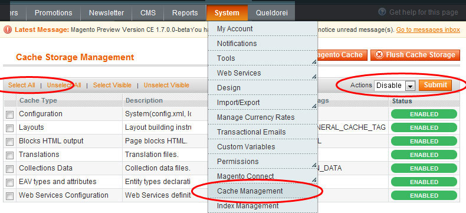 -
Activate Shopper Theme
Go to Queldorei -> Shopper -> Activate Theme. Select the store ( select all store views if you are not sure ) you want to activate theme for and press activate 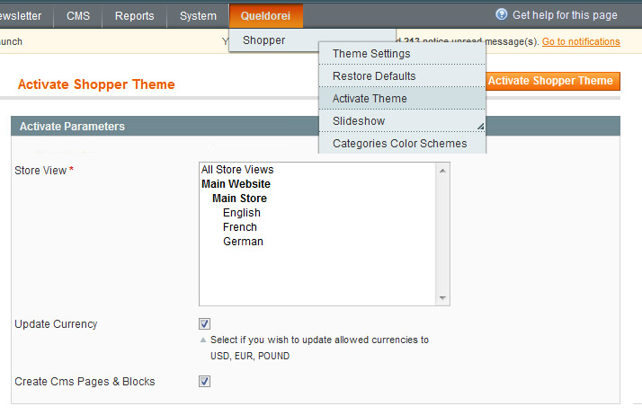If you have clean install there will be no store select. All settings will be applied to default configuration scope
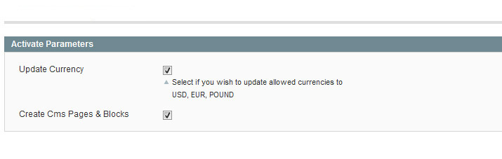"Activate Theme" will update system config. If you do not want to update all these settings - change them manually
Following config settings updated:
Web > Default pages- CMS Home Page = Shopper Home page - right column
- CMS No Route Page = Shopper No Route
- Default = shopper
- Copyright text
- Allowed currencies = USD, GBP, EUR
-
Currencies
- You can set currencies automatically during theme activation
OR you can set them manually. Go to System -> configuration. Choose Currency Setup tab. Set Allowed currencies = USD, GBP, EUR - Go to System -> Manage Currency Rates. press import. Wait for message "All rates were fetched..." and press save. Now you should be able to see currencies in the top right corner. If you are not, please refresh cache.
- You can set currencies automatically during theme activation
-
Home page
We provide 3 home page layouts.- Shopper Home page - right column - 2 columns layout with right column 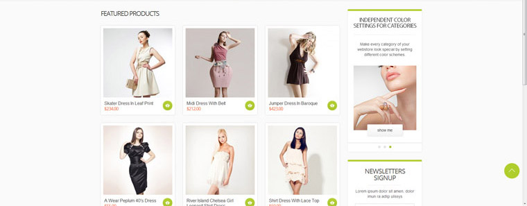
- Shopper Home page - left column - 2 columns layout with left column 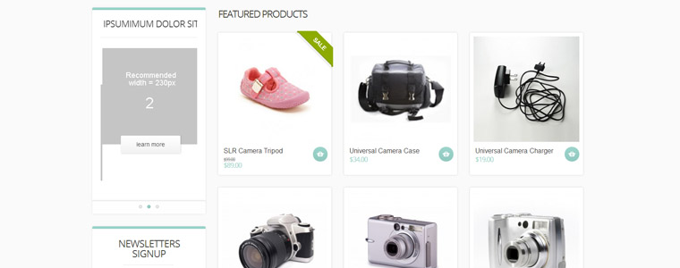
- Shopper Home page - banners - one column layout with 2 banners 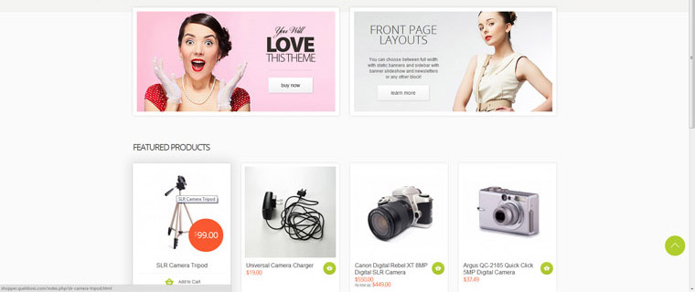
- Go to System -> Configuration -> General -> Web
- Open Default Pages section
- Edit CMS Home Page
If you see WYSIWYG editor, click on Show/Hide Editor to turn it off 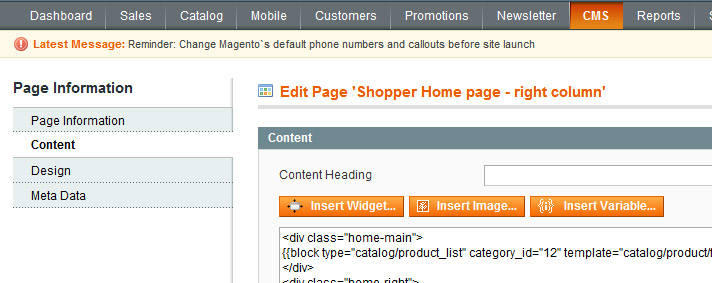 -
Categories
-
Manage Categories
Magento Store categories are managed in Catalog -> Manage Categories.If you use fresh install, there is only one root category (Default Category). This root category in not displayed on the frontend, and your navigation is empty.
In this case you need to add some categories under the root category (Default Category). To accomplish it you need to :- select the root category ( click on it )
- click Add Subcategory button
- fill in new category fields ( Name, Is Active, Included in Navigation Menu )
- save it. Your new top level category is ready. If you still do not see it, reindex data ( System -> Index Management )
- clear cache ( System -> Cache Management )
-
Change number of products per page
If you want to change default number of products shown on category page, go to System > Configuration > Catalog, open Frontend section. Here you can change the following options- List Mode - grid or list
- Products per Page on Grid
- Products per Page on Grid Default Value
- Products per Page on List
- Products per Page on List Default Value
-
Categories layouts
We provide 2 category layouts.- One column 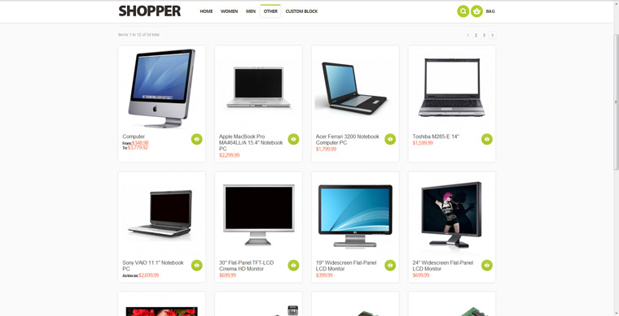
- Two columns 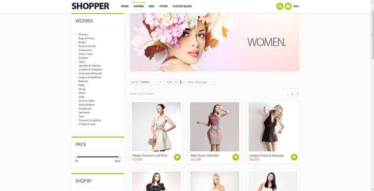
Two columns layout used by default. If you want to change default category layout you need to edit app/design/frontend/default/shopper/layout/local.xml.
Find catalog_category_default and catalog_category_layered. Insert this code inside each tag
If you want to change particular category layout to one column, you need to :
- go to Catalog > Manage Categories
- select category you want to edit
- switch to Custom Design section
- set options as follows 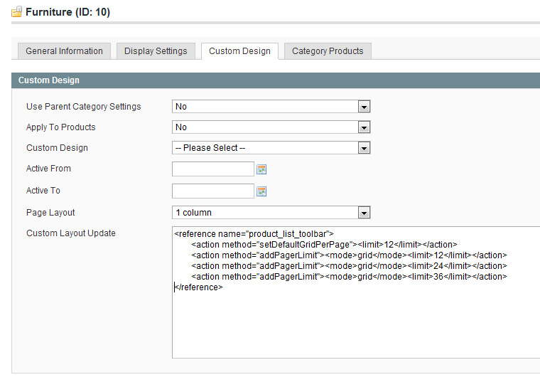. Use code in Custom layout update only if you want to change default products per page number
-
-
How Product Images Work
If you want edit product images go to Catalog -> Manage Products. Select a product. Select Images tab. Every image has following attributes:
- Label - this text will be used for alt attribute
- Sort Order - put thumbnails in order on the product info page
- Thumbnail - select it if you want to use this image as an thumbnail. Thumbnail images are used for smaller images on pages like 'Shopping cart', in cart dropdown etc
- Small Image - select it if you want to use this image in listings
- Base Image - select it if you want to use this image as a big product image. It will be shown on the product info page.
- Exclude - check if you want to exclude this image from additional images shown under big image on product info page. For example you can exclude the thumbnail image and the small image if you do not wish to see them on the product info page
-
Product Rollover Image
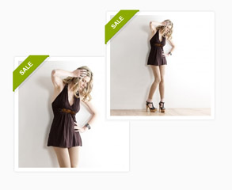
Magento products managed in Catalog -> Manage Products. To create or edit a product, go to Images tab. Select the image you want to use for listing pages ( small image ). After that select the image for rollover and type back in the product label 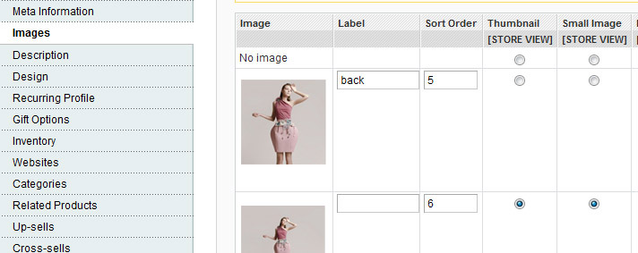 -
Localization
-
Translations
Shopper theme override some default text in magento. We also add custom text strings. Translate file is located in app/design/frontend/default/Shopper/locale/en_US/translate.csv. Use it to translate custom strings into other languages.
For example you need to translate everything to German. Follow these steps:- install original german translation from magento connect
- create app/design/frontend/default/Shopper/locale/de_DE/
- copy tranlate.csv to a new local folder
- edit with your favorite text editor, DO NOT use EXCEL
- file contains strings in following format
"Shopping cart","Bag"where
- Shopping cart is the original text string
- Bag is the translated text - switch store locale to german in System > Configuration > General
- refresh cache
-
Language flag
If you have several stores, you will see store switcher in the top left corner. It shows the store's flag and the store's name.
Flag images (16x12 pixels, PNG format) should be uploaded to skin/frontend/default/Shopper/images/flags folder. Images' names should be the same as the store view codes. E.g. if you have a store view with the code de, you will need to upload a flag image de.png to skin/frontend/default/Shopper/images/flags folder. Store code can be changed in System -> Manage Stores. Click on store view name. 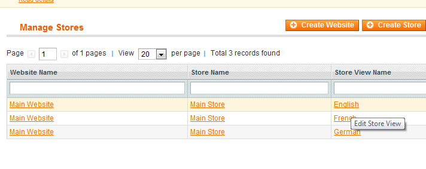
-
Theme Settings
To edit theme settings go to Queldorei -> Shopper -> Theme Settings
Restore defaults
If you want to restore default settings, go to Queldorei -> Shopper -> Restore Defaults. Select the store view ( select all store views if you are not sure, it is corresponded to default configuration scope ) and press restore
All changes you've made to cms pages/blocks will be lost
Also you have an ability to clear settings for all scopes. This might be useful if you have made some experiments for different stores / websites, but now you want to clean it with one click.
If you want to restore all blocks - select checkbox Restore Default Cms Pages & Blocks
If you make changes to some cms page/static block and want to restore it - please check How to restore default theme Block.Appearance
- Main Options
- Enable Google Font - enable or disable google font usage
- Font - select font to use for titles, buttons, prices, etc (google font should be enabled)
- Theme Color - select main theme color
- Title Color - override theme color for titles (if defined)
- Header Options
- Toolbar Background Color - This color will be used for toolbar background
- Toolbar Color - This color will be used for toolbar text
- Toolbar Mouseover Color - This color will be used for mouseover
- Header Background Color - This color will be used for Header Background
- Navigation Color - This color will be used for Navigation links
- Slideshow Background Color - This color will be used for slideshow Background
- Page Title Background Color - This color will be used for Page title Background
- Content Options
- Content Background Color - This color will be used for Content Background
- Content Background Image - This image will be used for Content Background
- Content Background Image Display Mode - stretch | tile - stretch on page or tile
- Content Link Color - This color will be used for Content Link
- Content Link Mouseover Color - This color will be used for Content Link Mouseover
- Product Slider Background Color - This color will be used for Slider bg on pages like product info OR shopping cart
- Product Slider Border Color - slider top border color
- Footer Options
- Footer Background Color - This color will be used for Footer Background
- Footer Text Color - This color will be used for Footer text
- Footer Link Mouseover Color - This color will be used for Footer link Mouseover
- Footer Banners Background Color - This color will be used for Banners Background
- Footer Info Background Color - This color will be used for Info Background
- Footer Info Border Color - This color will be used for Info Border
- Footer Info Title Color - This color will be used for Info Titles
- Footer Info Text Color - This color will be used for Info Text
- Footer Info Link Color - This color will be used for Info Link
- Footer Info Link Mouseover Color - This color will be used for Info Link Mouseover
- Price Options
- Price Font - font of price text(Enable google font to use this option)
- Price Color - This color will be used for price
- Price Circle bg Color - price circle background
- Other Options
- Login page background image - image set on login background
- Timeline Color - set color of slideshow timeline
Design
- Enable Responsive Design - Enable/Disable Responsive Design
- Show Price circle on product listing - enable/disable price circle in grid view
- Enable fixed header - If it is enabled, header will always stay at the top
- Show compare block in header - If it is enabled, show compare block in header
- Show search field instead of icon in header - If it is enabled, show search field in header
- Show navigation below logo - If it is enabled, show navigation under logo
- Enable custom css - Enable this option to load "override.css" file where you can override the default styling of the theme. To create "override.css" you can use the file "default.override.css" which is located in skin/frontend/default/shopper/css directory.
- Hide Compare functionality - It will hide compare links across the site, compare the sideblock and compare the icon in the header.
- Disable prev_next buttons - Enable/disable Prev/Next buttons on product page
Header
- Show Sign Up Link - Link in the Top Links (top right corner). Shown if user not logged in
- Custom Link in Top Link - Show Custom Link in the Top Links (top right corner).
- Custom Link Path - link path ( for example - id of your cms page)
- Custom Link Anchor Text - text of the link
- Custom Link Title Text - the link's title (shown on rollover)
Navigation
- Enable Wide Navigation - switch to wide navigation. DO NOT ENABLE wide navigation and "Shopper Theme Navigation" option at a time
- Use Theme Navigation - use Shopper navigation or default magento navigation
- Number of items in column - Define the number of items in the column for subcategories dropdown
- Home Link in Navigation - show the home link in top navigation bar
- Custom Navigation Block width - Define the custom block width in px. used for default magento navigation. If empty, default width is used ( 350px )
Catalog
- Show Categories filter in layered navigation - show/hide categories filter in SHOP BY block ( layered navigation )
- Show the number of options in layered navigation sideblock: - suitable for large attributes list. Add ability to limit shown attribute options and add 'show more' link
- Number of columns in grid mode ( 2 columns layout ) - choose the number of products in a row. To change the number of products per page go to System -> Configuration -> Catalog -> Frontend
- Number of columns in grid mode ( 1 column layout ) - choose the number of products in a row. To change the number of products per page go to System -> Configuration -> Catalog -> Frontend
- Bestsellers - Enter product ids you want to display in bestsellers block separated by comma. Example: 23,354,12. Leave it empty to hide bestsellers
Social
- Twitter Account - enter your twitter id
- Number of tweets shown in the footer - Number of tweets shown in the footer
- Twitter consumer key - Twitter consumer key ( please check this link for more info about consumer key - http://www.webdevdoor.com/php/authenticating-twitter-feed-timeline-oauth/ )
- Twitter consumer secret - Twitter consumer secret
- Twitter access token - Twitter access token
- Twitter access token secret - Twitter access token secret
- Replace Twitter with Static block - Enter cms block id if you want to replace twitter block with your static block
- Facebook ID - enter your facebook id
- Replace Facebook with Static block - Enter cms block id if you want to replace facebook block with your static block
CloudZoom
- Enable Cloud Zoom - choose if you want to use Cloud Zoom or default magento zoom on product page
- Cloudzoom position - Position of zoomed image ( right | inside ) .
- Lens Opacity (%) - Opacity of the lens pointer.
- Zoom Area Width (px) - lens area width
- Zoom Area Height (px) - lens area height
- Image Width After Zooming (px) - zoomed image width
- Image Height After Zooming (px) - Leave it empty to keep aspect ratio of the image
- Tint Color - Color which will cover the main image. (e.g. #ededed). Does not work with Soft Focus.
- Tint Opacity (%) - opacity of tint overlay
- Soft Focus - Applies a subtle blur effect to the main image. Does not work with tint.
- Smooth Move - Amount of smoothness/drift of the zoom image as it moves. The higher the number, the smoother/more drifty the movement will be. 1 = no smoothing.
Ajax features
- Enable Priceslider for layered navigation - enable/disable priceslider
- Enable Ajax wishlist and compare - enable/disable Ajax wishlist and compare
- Enable Ajax cart / Quick view - enable/disable Ajax cart & Quick view
- Show Quick view button - show/hide Quick view button. Quick view popup will be shown for products with required options regardless of this option
- Enable Scroll to top button - enable/disable scroll to top button
Product Images
- Zoom method for Product page - Choose zoom method product details page - Magento default | Cloudzoom | Lightbox.
- Main Product Image Width (px) - Please update the cloudzoom big image size if you override dimensions. If width is not specified, default width and height will be used (363 x 464 pixels).
- Main Product Image Height (px) - If height is not specified the width value will be used. If width is not specified, default width and height will be used (363 x 464 pixels).
- Use aspect ratio for all images - Use the main image aspect ration throughout the site
Product
- Show "New" label: show new label on products
- "New" label position: label position
- Show "Sale" label: show sale label on products
- "Sale" label position: label position
- Enable Upsell Products: show/hide upsell products on product info page
- Number of Upsell Products in slide: number of products per slide
- Replace Upsell Products: Upsell products can be replaced with static block queldorei_product_additional. Possible variants are: always replace, never replace, replace if no upsell products
- Show SKU on product page: show/hide sku
- Hide the second price after product options on configurable product page: show/hide bottom price
Sideblocks
- [Sideblock] - Enabled: show/hide sideblock
- [Sideblock] - Sort Order: sideblock order in column
Brands slider
IMPORTANT: Brand images stored in media/wysiwyg/queldorei/shopper/brands/
Image name is based on brand label. All letters should be converted to lowercase. Spaces updated to "_".
EXAMPLES
- Adidas - adidas.png
- Western Digital - western_digital.png
To setup Brands configuration - go to Queldorei -> Shopper -> Brands Settings
Brands settings- Status: enable/disable slideshow
- Show on: Select pages to show slideshow ( all pages/ home page only )
- Show all brands: Yes - show all brands, No - brands which has at least one active product
- Attribute code: Attribute for product brands. ( Can be found in Catalog > Attributes > Manage Attributes )
- Brand Image File Extension : png ( gif, jpg )
- Brand Image Width (in px) : default width is 96 px
Slideshow
To setup Slideshow configuration - go to Queldorei -> Shopper -> Slideshow -> Configuration
Slideshow settingsCommon settings
- Enabled: enable/disable slideshow
- Show on: Select pages to show slideshow ( all pages/ home page only )
- Select slider: switch between flexslider and revolution slider
Flexslider settings
- Fixed height: Enter height in px. Leave empty to have slideshow height adjusted to the largest slide
- Animation: Select your animation type
- Slideshow: Animate slider automatically or not
- Smooth Height change: Change slider height according to each slide height
- Animation loop: Should the animation loop?
- Mousewheel: Allows the slider to navigate with the help of mousewheel
- Slideshow speed: Set the speed of the slideshow cycling, in milliseconds
- Animation speed: Set the speed of animations, in milliseconds
- Show navigation: Show navigation for paging control of each slide?
- Show previous/next navigation: show/hide previous/next navigation
- Show timeline: show/hide timeline
Revolution slider settings
- Delay: The time one slide stays on the screen in Milliseconds (Default: 9000)
- Basic height: Basic Height of the Slider in the desktop resolution in pixel, other screen sizes will be calculated based on this (Default: 490). It should be similiar to the settings of the style sheet. If you use a fullwidth banner, it will deinfe the max. height of the banner by resizing of the browser. The banner wont be higher than this size.
- Basic width: Basic Width of the Slider in the desktop resolution in pixel, other screen sizes will be calculated based on (Default: 890). It should be similiar to the settings of the style sheet. If you use a fullwidth banner, it will deinfe the max. width of the banner by resizing of the browser.
- Hide thumbs time: Time when the Thumbs are hidden(Default: 200)
- Navigation bar type: Display the type of the navigation bar (Default:"none"). ** In Fullwidth version thumbs wont be displayed if navigation offset is set to shwop thumbs outside of the container! Thumbs must be shown in the container!
- Position of the Navigation Arrows: Display position of the Navigation Arrows
- Navigation bullets: Look of the navigation bullets (Default: "round") ** If you choose navbar-old, we recommend to choose Navigation Arrows to nexttobullets
- Enable Swipe Function on touch devices: On / off
- Shuffle slides in random order: On / off
- Navigation offset (horizontal): The Bar is centered but could be moved this pixel count to the left(e.g. -10) or to the right (Default: 0) ** By resizing the banner, it will be always centered !!
- Stop the Timer when hovering the slider: On / off
- The basic Width of one Thumbnail: (only if thumb is selected. Default:100)
- The basic Height of one Thumbnail: (only if thumb is selected. Default:50)
- The amount of the Thumbs visible at the same time: (only if thumb is selected) ** All Thumbs will be hidden in the smallest Responsive Level, and in sa maller level default size is reset to 60x30px. Can be modified in the settings.css file)
- Hide caption limit: It Defines if a caption should be shown under a Width Limit ( Based on The Width of Banner ! ) You need to define the captions which should be shown seperately with data-captionhidden="on/off"
- Hide all caption limit: Hide all The Captions if Width of Browser is less than this value
- Hide slider limit: under this Limit the Slider is hidden and the timer is stopped
- Stop at selected Slide Number: -1 or 1 to 999. Stop at selected Slide Number. If set to -1 it will loop without stopping. Only available if stopAfterLoops does not equal -1 !
- Stop at selected Slide Number after slide looped "x" time: -1 or 0 to 999. Stop at selected Slide Number (stopAtSlide) after slide looped "x" time, where x is this Number. If it is set to -1 it will loop without stopping. Only is available if stopAtSlide does not equal -1 !
- Show timeline: show / hide timeline
- Timeline position: Select timeline position ( top / bottom )
To manage Flexslider slides - go to Queldorei -> Shopper -> Slideshow -> Manage Flexslider Slides
Slide parameters- Store View: - select store to show slide
- Text align - align of slide text
- Title - slide title. Shown if not empty
- Text - slide content text. Shown if not empty
- Button Text - slide button text. Shown if not empty
- Content width - width of slide content ( in px )
- Link - slide link
- Image - slide image.
- Small Image - Small image used for small screens (less than 768)
- Status enabled | disabled
- Sort Order - slide sort order
To manage Revolution slides - go to Queldorei -> Shopper -> Slideshow -> Manage Revolution Slides
Slide parameters- Store View: - select store to show slide
- Transition - The appearance transition of this slide
- Masterspeed - Set the Speed of the Slide Transition. Default 300, min:100 max:2000.
- Slotamount - The number of slots or boxes the slide is divided into. If you use boxfade, over 7 slots can be juggy.
- Slide Link - Slide Link
- Image - slide image.
- Slide thumb - An Alternative Source for thumbs. If not defined a copy of the background image will be used in resized form..
- Slide Content - Slide Content
- Status enabled | disabled
- Sort Order - slide sort order
Slide captions
Captions are Containers which can be customized via CSS, classes for the start animation and some data options.To add new caption to slide click on "Add new caption" link
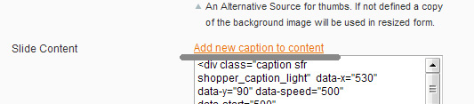
You will see popup with a plenty of options
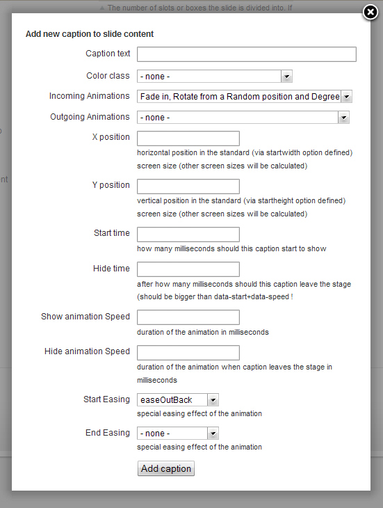
Required options are:
- Caption text: - select store to show slide
- Data x - horizontal position in the standard (via startwidth option defined) screen size (other screen sizes will be calculated)
- Data y - vertical position in the standard (via startheight option defined) screen size (other screen sizes will be calculated)
Caption look defined by color class option. There are a lot of default classes, however we add some theme specific classes.
-
shopper_small_caption_light
shopper_small_caption_medium
shopper_small_caption_bold
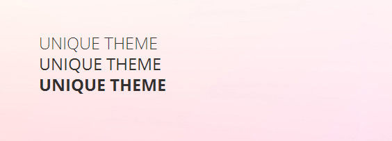 -
shopper_large_caption_light
shopper_large_caption_medium
shopper_large_caption_bold
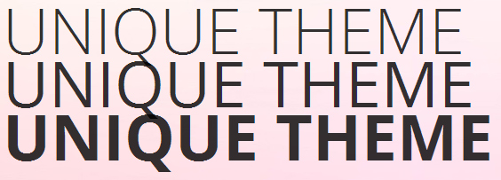 -
shopper_caption_light
shopper_caption_medium
shopper_caption_bold
-
shopper_small_text_light
shopper_small_text_medium
shopper_small_text_bold
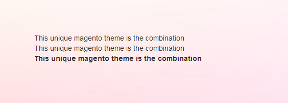 -
shopper_medium_text_light
shopper_medium_text_medium
shopper_medium_text_bold
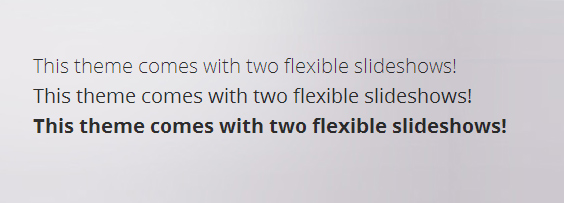 -
shopper_white_bg_light
shopper_white_bg_medium
shopper_white_bg_bold
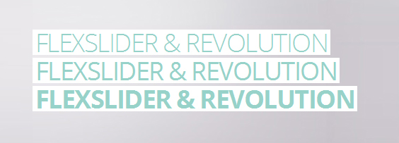
To change caption color you need to edit final caption html and add inline style.
To insert an image in caption you need to:
1. Upload the image via ftp client to media/queldorei/shopper/ folder 2. Update the caption text with the following code For More info about captions' parameters please refer to the Revolution slider document.
Categories Color Schemes
You have an ability to override any theme option for particular category and/or its subcategories. In order to do this you need to go to Queldorei > Shopper > Categories Color Schemes
Here you can create a new scheme for any category. A scheme has following options:
- Store View: - select store to show slide
- Category Id id of category to override options to
- Apply Scheme to Subcategories? yes | no
- Status enabled | disabled
- Sort Order - slide sort order
Cms Pages and Static Blocks
-
Before edit any content in CMS PAGES or BLOCKS you need to Disable the WYSIWYG editor in System - Configuration - Content Management.
WYSIWYG magento editor reformat content html and you can see get some bugs if you do not disable it.
After it is disabled you can edit html the way you want. -
Retina ready images in static blocks and pages
Now that the New iPad is out, and there have been various clues that perhaps in the future Apple screens on other devices will have a similar resolution, handling high resolution images has become an important issue for many designers.
Our theme supports high resolution images for retina screens.
Lets take shopper_logo block as an example.
- Login to admin and go to CMS > Static Blocks
- Select block with Identifier = shopper_logo. In content text area you will see a code similar to this one
- There are 3 important parameters to support retina screens.
1. Width & Height
2. class="retina"It is very important for an image to have these 3 parameters. Width and height should be equal to dimensions of an image for regular screens. Class="retina" define that this image should be reloaded for retina
- When you upload a new logo you will need to upload 2 images in admin
your_logo.png - normal size image for regular screens
your_logo_2x.png - double size image for retina screens
Please note that a retina image has a different file name - your_logo_2x - you should add this to original image name
However, you need to select an image for regular screen to insert the content textarea
-
How to create Static Block
- Go to CMS > Static Blocks > Add New Block
- Enter Identifier. (all in lower-case and separated by underscore).
- Enter the title in Block Title.
- Select the Store View which this block will be applied to.
- Select Enabled in the Status field. Disabled - not displayed in the frontend.
- Insert your Content.
- Click Save Block.
-
How to restore default theme Block
If you delete or change page/block and want to restore it - you can always find the original version in app/code/local/Queldorei/Shoppersettings/etc/cms.xml. It contains two blocks of data - pages & blocks. They correspond to CMS Pages & Static Blocks. Xml fields are pretty self-explanatory.
If you make changes to some cms page/static block and need to restore it - please check Restore defaults. -
List of theme Blocks
Pages
- Shopper Home page - right column - 2 columns layout with right column You can add any cms block to the right column using this code where shopper_banners_slideshow is block IDENTIFIER
- Shopper Home page - banners - one column layout with 2 banners
Banner could be an image
Or an image and text + button above it
Content is wrapped in
Strong is used for banner title
By default text is left aligned. If you want to change align, you can use
Featured products block
Featured products block added with help of the following code where 12 is ID of a category to show products from
num_products - limited number of products to show
title - additional parameter if you want to override default block title ( Featured products )
Featured products block slider
Uses the same parameters as a usual block, but has a different template
New products' block
New products' block can be added using the following code products_count - number of products to show
New products block slider
Uses the same parameters as a usual block, but has a different template
On sale products block
On sale products block can be added using the following code products_count - number of products to show
On sale products block slider
Use the same parameters as a usual block, but has a different template
- Shopper No Route - cms page is used as magento 404 page
Static Blocks
- Header blocks
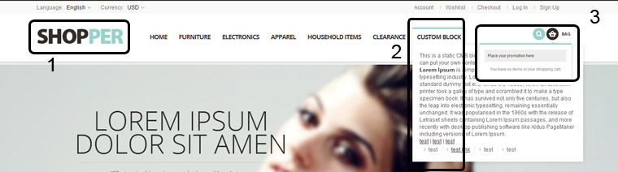
- Shopper Store Logo - no need to upload your logo to ftp, simply change it in admin
- Custom Block - you can display your custom content as a drop-down block in navigation. Custom block width is defined in Navigation section of theme options
- Shopper Cart Promotion - displayed in the cart dropdown
- Footer blocks
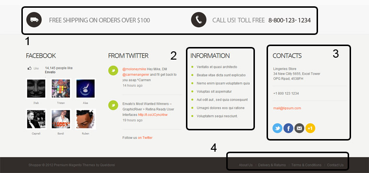
- Shopper Footer banners - no need to upload your logo to ftp, change it right in admin.
Default banners code is - Shopper Footer Information
- Shopper Footer Contact
- Shopper Footer Links
- Shopper Footer banners - no need to upload your logo to ftp, change it right in admin.
- Product page blocks
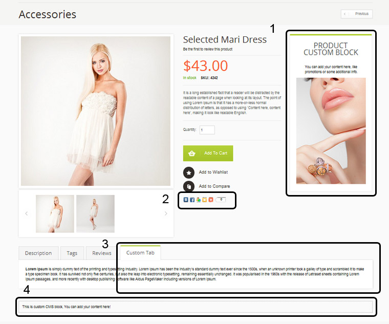
- Shopper Additional Product block - additional block on product page. Controlled in Product section of theme options.
There are 3 layout types for a product page.
- no right block at all.
- always display additional block
- display upsell products. If no upsell, display additional block
- Shopper Product Addthis block
- Custom Tab - custom tab on a product info page, ready to display any content: info about shipping, returns, sales, etc.
- Shopper After Tabs - block displayed on product page below tabs.
- Shopper Additional Product block - additional block on product page. Controlled in Product section of theme options.
There are 3 layout types for a product page.
- Other blocks
- Empty Category block - shown on empty category page
- Empty Shopping cart block - shown on empty cart page
- Shopper Newsletter text - text shown in newsletter block
- Shopper Slideshow sideblock - column slideshow block Each slide can have title, text, image and button. Basic html is following:
JavaScript
This theme uses following Javascript files.
- jQuery is a Javascript library that greatly reduces the amount of code that you have to write.
- Flexslider is the best responsive slider
- Swipe jquery swipe plugin
- blockUI jquery plugin to block screen
- anystretch jquery plugin to stretch background images
- jquery ui UI library
- jCycle is a slideshow plugin that supports many different types of transition effects
- jCarousel is a jQuery plugin for controlling a list of items.
- cloud Zoom is a free jquery image zoom plugin.
- html5shiv - JavaScript shiv for IE to recognise and style the HTML5 elements.
- mColorPicker - nice color picker.
- hoverIntent - upgrade of jQuery's built-in hover function.
- prevNext - free extension from Inchoo.
PSD Files
Some Photoshop basics
Scale (size change)
To change the size of buttons, price boxes, etc. select the layer that you want to change, then press ctrl+t and holding left mouse button pressed drag the transformation handles. To change the whole button or pricing plan sizes choose folders. You can change sizes of all buttons if you link them together.
Text change
You can click on top of the text with the Type tool (T). You know your cursor is in the right place when the Type tool's cursor changes to an "I-beam." However, if you click in the wrong place, Photoshop will create a new type of layer; in this case, press the Escape key to cancel the new layer. You can change text parameters such as size, kerning etc. in "Character" window, Main menu: Window / Character.

Shape change
Shape is a filled layer linked to a vector mask. You can easily change the fill to a different color, a gradient, or a pattern by editing the shape's fill layer. You can also edit the shape's vector mask to modify the shape outline, and apply a style to the layer.
- To change the color of a shape double-click the shape layer's thumbnail in the Layers palette, and choose a different color using the color picker.
- To modify the outline of a shape, click the shape layer's vector mask thumbnail in the Layers palette or Paths palette. Then change the shape using the shape and pen tools (Direct Selection tool A).
- To move a shape without changing its size or proportions, press the spacebar and hold it while you drag the shape.
Visible invisible layers 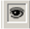
To hide/unhide a layer click on the eye icon left to the layer's name in layers' window. To open the layers' window go to main menu on the top of interface Window/Layers.
Add / hide effect
Below the layer name can be some effects. If there is an arrow right to the layer's name it means that this layer has effects. Click on that arrow to show/hide the effects list.
To hide or show effects in layers click on the eye icon left to effect name in layers' window.
Link layers 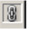
Linking allows to move and change sizes of all linked layers at a time. Some layers are linked together. To break this link choose a layer and then press on the chain icon between the eye icon and the layer's name. Do this to all the layers you want to link or unlink.
Duplicate layer
Go to your "Layers" palette, and click on the layer that you want to duplicate.
Go to "Layer" and select the duplicate layer. In the pop-up window that opens, give the new layer a name. If the layer you are copying is called "My Layer," call the duplicate something that will make it easily identifiable, such as "My Layer Copy." Click "OK."
Multiple layers selection
Press and hold ctrl to select multiple layers.
Sources and Credits
- jQuery is a Javascript library that greatly reduces the amount of code that you have to write.
- Flexslider is the best responsive slider
- Swipe jquery swipe plugin
- blockUI jquery plugin to block screen
- anystretch jquery plugin to stretch background images
- jquery ui UI library
- jCycle is a slideshow plugin that supports many different types of transition effects
- jCarousel is a jQuery plugin for controlling a list of items.
- cloud Zoom is a free jquery image zoom plugin.
- html5shiv - JavaScript shiv for IE to recognise and style the HTML5 elements.
- mColorPicker - nice color picker.
- hoverIntent - upgrade of jQuery's built-in hover function.
- prevNext - free extension from Inchoo.
Once again, thank you so much for purchasing this theme. As I said at the beginning I'd be glad to help you if you have any questions regarding this theme. No guarantees but I will do my best to assist. If you have a general question about the themes on ThemeForest, you might consider visiting the forums and posting your question in the "Item Discussion" section.
Queldorei